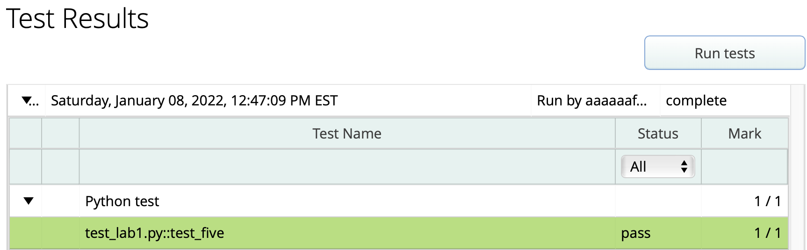
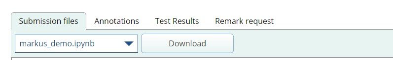
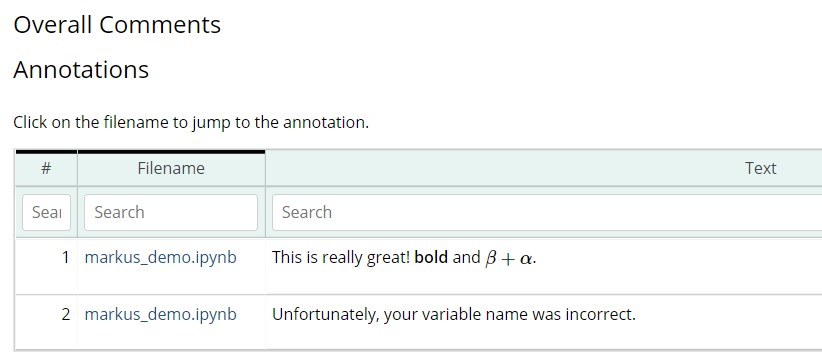
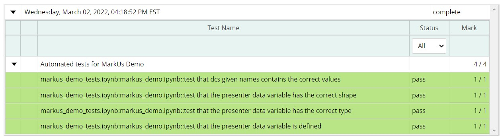

Guide to Using MarkUs#
MarkUs is a web application we’re using in this course to manage your labs and homeworks. MarkUs lets you submit your Jupyter notebook files for feedback and grading from both automated tests and your TAs. In this guide, we’ll go over the basics of how you’ll use MarkUs in this course.
(Fun fact: MarkUs is developed and maintained by the Department of Computer Science and Professor David Liu right here at the University of Toronto!)
Getting to MarkUs#
To access MarkUs, visit the following URL: https://markus-ds.teach.cs.toronto.edu.
Tip: Control/Command-click to open the link in a new tab so you can still see this guide.
You’ll be prompted to login with your UTORid and password. After logging in, you’ll be taken to your MarkUs homepage, which shows your courses that are using MarkUs this semester (likely just this course).
Click on your course to be taken to the MarkUs course.
Submitting Work to MarkUs#
On your course page, you’ll see a list of assessments that your instructors have set up.
Note: These assessments will be set up and published on Markus throughout the semester, so you won’t see them right away.
To submit a Jupyter notebook file to MarkUs:
First, go to the University of Toronto JupyterHub and download the file you want to submit (e.g.,
Lab_1.ipynb).Then in MarkUs, click on the link to the assessment you want to submit to (e.g., lab1: Introduction to Data Science Tools).
You’ll now see the assignment page. There’s some information about the assignment here, but this will likely all be repeated from your assessment handout.
Click the Submissions tab. This takes you to the page where you’ll submit your work for the assignment. You’ll see a list of files you’ve submitted, which starts off empty.
Click on the Submit File button on the top-right corner of the table of files. This opens a popup dialog.
Click on Browse button, and select the notebook file you downloaded in Step 1.
Tip: if your instructor has configured the assessment to only allow you to submit a file with a particular name (useful for autograding), you’ll need to make sure the name of your file matches the required filename. In the popup dialog, you can also choose to automatically rename the file you’re submitting to match the required filename.
Finally, click Save to submit the file!
The table of submitted files should refresh, showing the file you just submitted. You can click on the file to preview it directly in your web browser, which lets you check whether you submitted the correct file. You can also download the file you submitted by clicking on the download icon next to the name of the file.
(Experimental) Submitting directly from JupyterHub#
We are piloting a new JupyterHub-MarkUs integration that lets you submit files to MarkUs directly from JupyterHub, without needing to download your notebook file to your computer. To make use of this feature, you’ll need to perform a one-time setup by following these steps:
First, go to the JupyterHub home page, logging in if necessary.
Important: make sure you are in the top-most (“root”) folder on JupyterHub, not inside your
ggr274-20241folder. Otherwise, click on the blue folder icon above your file list to go to your root folder.In your root folder, go to the top-right menu and click on New -> Text File.
A new page will open for the new file. First, click on the file name (usually untitled.txt) at the top of your screen and rename the file to markus-api-key.txt. Make sure to use that exact file name, including all lowercase letters, the hyphens, and the .txt extension.
Now, keep the file open and open a new browser tab. In the new tab, login to MarkUs.
In MarkUs, go to the top-right menu, click on the “down arrow” and go to Settings.
In your Account Settings page, look for the “Your API Key” section. You likely won’t have an API key yet. Click on the Reset API Key button and wait for the page to refresh.
Now under “Your API Key”, you’ll see a long string of letters/numbers followed by an equals sign (
=), e.g.Bzk...........................hM4x=
Copy-and-paste that string, including the equals sign (
=), into your markus-api-key.txt file on JupyterHub.Save your markus-api-key.txt file by going to File -> Save.
Then, close the file. Congratulations, you’ve finished the setup! 🎉
Now, let’s try it out! Starting with Week 7 onwards, when you are ready to submit your notebook file to MarkUs, you can do the following:
Open your notebook file (e.g.
Homework7.ipynb) in JupyterHub, if it isn’t already.Look in the toolbar for the MarkUs icon
and click on it.
That’s it! After a few seconds (or minutes, depending on the size of your file), a popup window should appear saying that your file was submitted to MarkUs.
If an error occurred, first make sure that you followed the setup instructions correctly. If you’re confident that you did, please contact Prof. David Liu and in the mean time, submit your file using the standard approach (downloading the file to your computer and uploading it to MarkUs).
Warning: this MarkUs integration will allow you to submit files even after the due date has passed. It is your responsibility to ensure that you are submitting your work before the due date.
Running Automated Tests#
For each assignment, we provide some automated tests that check whether your submission matches the values we expected.
Here is how to run them:
Click the Automated Testing tab.
Click button Run tests and wait several seconds while the test is run.
Reload the webpage. Hopefully you see something like this. If not, and you can’t figure it out, ask for help!

Viewing Feedback and Graded Results#
Once your assignment has been graded by a Teaching Assistant (TA), you will be able to view your results and feedback left by your TA.
Click on the assignment, and go to the Results tab
You can view your grade breakdown on the right side of the screen, like below:

On the left side under Submission files, you can go through your submitted files and view feedback. Using the dropdown menu, you can switch between files. Hover over the yellow boxes to read any annotations left by the TA.

You can also view these annotations in the Annotations tab.

Click on the Test Results to see the results of running our automated tests on your submission. If a test failed, it would be highlighted in red.
